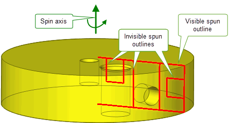

| |
Working with Sheets and Wires |
| <<< Local Operations | Chapters | B-Spline Curves and Surfaces >>> |
Many Parasolid operations work equally well with sheet, wire and solid bodies. This chapter describes Parasolid functionality that is specifically aimed at modelling with wire bodies and sheet bodies, or whose behaviour with wire and sheet bodies is significantly different to its behaviour with solid bodies. Although Parasolid’s primary focus is creating solid models, there are many occasions when you need to work with sheets or wires. For example:
The functionality described in this chapter makes all of these techniques possible.
Despite the superiority of solid modelling applications such as those based on Parasolid, there are still CAD applications that rely on surface modelling techniques, particularly for parts containing free-form geometry. Models created in these applications often need to be imported into Parasolid-based applications, as described in Chapter 11, “Importing Foreign Data”, and the sheet bodies resulting from such imports need to be cleaned up and reworked so that modelling on the body can continue.
Parasolid provides you with a wide variety of operations specifically aimed at sheet modelling, making it easy to create, modify, blend and “solidify” sheets. These complement the core solid modelling capabilities offered, enabling your application to tightly integrate the two so as to provide advanced modelling systems that combine the strengths of both paradigms. This section describes this functionality:
Parasolid provides operations to let you create sheet bodies from scratch from a collection of faces. You can also create primitive sheet bodies such as circles, polygons and rectangles directly, by calling efficient dedicated functionality.
You can modify existing sheets by trimming them (making them smaller) and extending them (making them larger).
You can create a set of neutral (mid-surface) sheets from a solid body, as shown in Figure 6-1, or from faces of sheet bodies.
Figure 6-1 Creating neutral sheets from a solid body
Trimming sheets to a specified boundary is generally a two-part process:
Figure 6-2 Trimming sheet bodies
There are many ways that you can imprint curves onto a body. The most common methods involve:
See Section 6.4.1 for more methods of imprinting. Parasolid can also join together disconnected parts of an imprinted curve automatically, thereby ensuring that sheets are reliably divided into face sets ready for trimming.
As well as trimming sheets, you can extend sheets beyond their current boundaries, following the underlying surface wherever possible. When a sheet is extended to a point where no underlying surface is available, you can control the shape of the extension that is created.

Figure 6-3 Creating sheet bodies by combining sheet extension and boolean operations
Parasolid can extend sheets either by a specific distance, or by extending until the sheet reaches a specified target body.
When extending by a specific distance, you can control whether to create a precise or a loose boundary. Creating a loose boundary can improve performance in cases where the exact boundary shape is irrelevant for your needs, for example if you intend to trim away some of the extension using subsequent modelling operations.

Figure 6-4 Creating precise and loose boundaries when extending sheets
When extending to a target, you can control whether to extend until the sheet first reaches the target, or until the sheet leaves the target, as shown in Figure 6-5
Figure 6-5 Controlling the result when extending a sheet to a target body
Blending operations (described in more detail in Chapter 10, “Blending”) can be performed on sheets as well as solids.
Figure 6-6 Creating blends between sheets

Figure 6-7 Creating blends between sheets
You can sew together sets of sheets that are geometrically close. This is particularly useful when importing trimmed surface data from another, non-Parasolid, application (see Section 11.2). In such cases, because Parasolid expects extremely accurate geometry and rich topological information, the result of an import can often be a set of disconnected sheets with no information available about how each sheet should connect to the others. Parasolid make it possible to heal such bodies without requiring any topological information.
A collection of sheet bodies can be sewn together by gluing them where their edges meet, resulting in a single connected body. Parasolid sews together all pairs of edges which are less than a specified distance apart, as shown in Figure 6-8.
Figure 6-8 Sewing together collections of closely spaced sheets.
Several options are provided, including:
In addition, Parasolid supports incremental sewing. This is a technique whereby sewing is repeated several times on the same set of sheets, increasing the maximum gap that will be sewn across with each iteration. The effect of this is to maximise the preservation of small details on parts where significant details are present over a wide range of scales.
Parasolid also supports knitting operations. Knitting is similar to sewing, but can be used in cases where you want to combine sheets with solid bodies, or combinations of bodies. Parasolid can knit entities that are coincident to within a tolerance set by your application.
Parasolid supports a number of other miscellaneous operations with sheets. These include:
As with sheet bodies, Parasolid provides specific functionality for modelling with wire bodies. This includes:

Figure 6-9 Various offsets of a star-shaped wire body
A profile is a general term for a simple zero-, one- or two-dimensional body that is subsequently used to create new bodies with free-form geometry. Creating profiles is an important technique in solid modelling, and Parasolid provides functionality to make it simple.This section describes how you can create profiles from a set of curves, by creating sheet bodies directly or from existing entities.
There are four general approaches to creating profiles:
Chapter 9, “Building Bodies from Profiles”, tells you about how you can use profiles to create new bodies.
The most basic way of creating a profile is to build it piecemeal by imprinting a series of curves:
Figure 6-10 Imprinting curves by scribing and projecting
As mentioned in Section 6.2.1, Parasolid provides a range of functionality to let you create primitive sheet bodies such as circles, polygons and rectangles.
Parasolid provides tools to create a wire profile from a set of existing edges or curves in a single operation, and to turn a closed wire into a sheet body if required.
Another way of creating profiles is to use outlines. This is specialised functionality that creates a profile from the outline of an existing body. Parasolid supports the following types of outline:
Figure 6-11 Creating outline curves for a body

Figure 6-12 Creating an outline of an edge-on sheet body
Figure 6-13 Creating a perspective outline for a body
Figure 6-14 Clipping perspective outline curves
Figure 6-15 Creating spun outlines for two bodies
Figure 6-16 Creating invisible outlines of a body with holes

Figure 6-17 Shadow curves on a set of bodies
| <<< Local Operations | Chapters | B-Spline Curves and Surfaces >>> |